This guide is an overview of how code is saved and ran on the Arduino Uno, and how to use a brand new chip on an Arduino or breadboard.
This guide assumes you have read the previous guide on the Arduino Uno's components, and breadboarding an Arduino.
In the process, we are going to go into detail on how to program the microcontroller, burn a bootloader, and use an Arduino as an ISP.
Guide Contents:
One of the best things about many Arduino boards is how they make the process of uploading code easy. They do this by hiding the complexity involved with programming different types of microcontrollers.
However, once you start making your own microcontroller based PCBs, you need a greater knowledge of how a microcontroller is programmed.
So what exactly happens when you press the Upload button in the Arduino IDE?
To start with some basics, the first thing to understand is that an Arduino sketch is compiled down to a binary file.
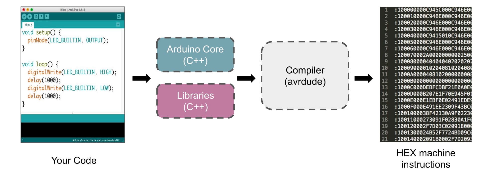The combination of the Arduino core libraries, any custom libraries you are using, and the avrdude compiler will create a file with a .hex file extension. Other microcontrollers might need a .bin, which is another format for binary data.
You can export a HEX file from the Arduino IDE (without uploading it) by going to Sketch -> Export compiled Binary
Open the file in a code editor, and you will see the binary blob.
The majority of a HEX file is made of two things:
A microcontroller's memory is a giant 2x2 array of values. If our code is too big, we will fill up the microcontroller's memory. If our code is empty, we will fill up the memory with null values.
It is important to note, that if you compile your sketch for a board with a different microcontroller (like an Arduino Leonardo, for example), the HEX binary file will be completely different.
This HEX file will then need to travel, from your computer to the microcontroller, so that it can save the code at those addresses, and eventually run the code.
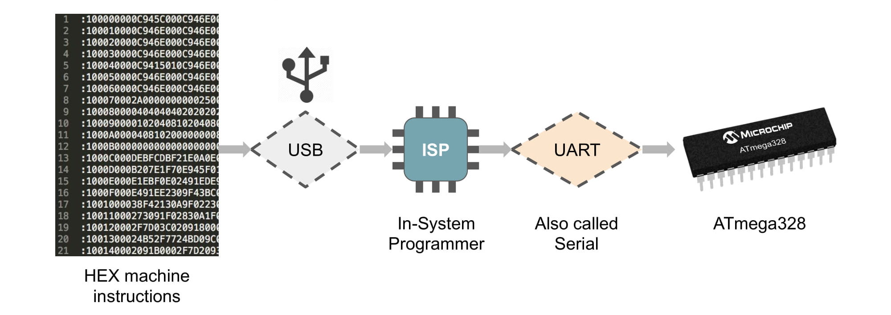The HEX file is sent over the USB connection to the Arduino Uno's uart-to-usb adapter (the ATmega8u2).
Because the ATmega8u2 is a separate device that sits between our computer and the target microcontroller (ATmega328p), we can call the ATmega8u2 an in-system programmer (ISP). That simply means it is a device who's sole purpose is to program our microcontroller.
The ISP (ATmega8u2 in our case), then converts that USB data to UART, and sends it to the target ATmega328p to be saved to memory.
Note: Have you every noticed the Arduino Uno resets every time you open a serial port to it? It is important to know that the uart-to-usb adapter (ISP) on the Arduino Uno will automatically reset the ATmega328p every time a new serial port is opened.
Note: It is also important to know that the ATmega328p can read in new code only just after it has just reset. That is why the Arduino Uno designers decided to make the uart-to-usb adapter (ISP) automatically reset the chip when a serial port opens.
Hurray! That is how the Arduino IDE gets a sketch to the Arduino Uno!
When making DIY boards, we use microcontrollers that we buy from online. However, if you try pressing the Upload button in the Arduino IDE with a brand new ATmega328p, you will get a bunch of errors and it won't work.
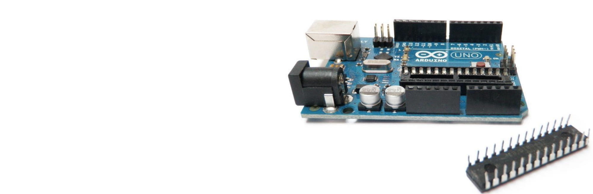When you get a brand new microcontroller that you ordered online, it's memory is completely empty, and it is still in it's factory-default settings.
There is, however, one small piece of code on the chip. It can never be erased, and it is the first thing the chip does after resetting (or powering on).
This small piece of code is called the manufacturer's bootloader, and it does just one thing:
After resetting (or powering on), the manufacturer's bootloader will wait to see if there is any new code. After a very short amount of time, if there is no new code, it will exit and move on to run whatever code is saved in memory.
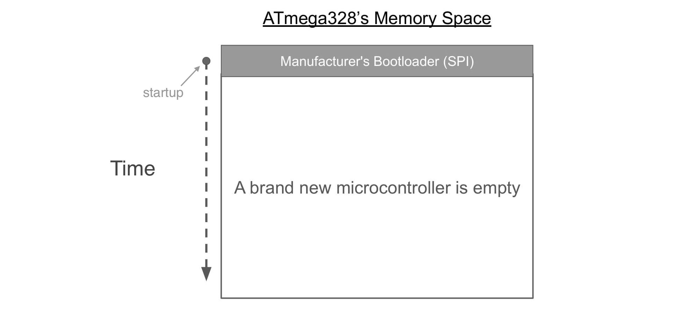Atmel, the designers of the ATmega328p, decided that by default the ATmega328p reads code from the SPI pins. The SPI pin on the Arduino Uno are pins D13 (SCK), D12 (MISO), and D11 (MOSI), and that is where the manufacturer's bootloader reads in the new code.
Let's try and use the SPI pins to program this brand new microcontroller, like the manufacturer requires us to.
Once we put our code on the microcontroller, it will be saved to that empty memory space, and it will run immediately after the manufacturer's bootloader following a reset (or powering on).
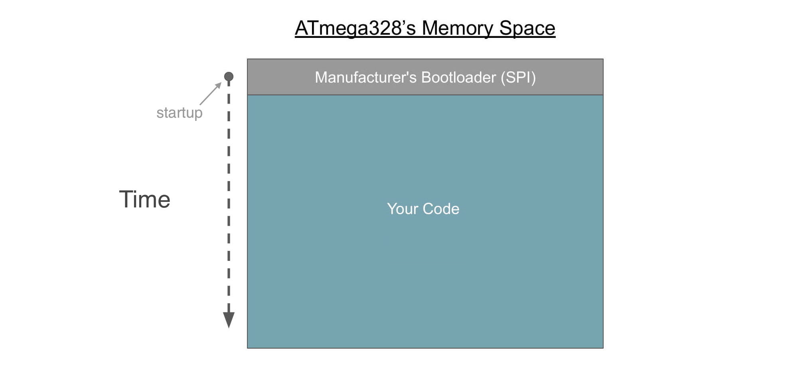Computers are not able to communicated over SPI, so we need a device to convert our computer's USB data to SPI data.
The device we need is another example of an in-system programmer (ISP), and I'll use the AVR mkII. The mkII was designed to work with the ICSP pinout standard.
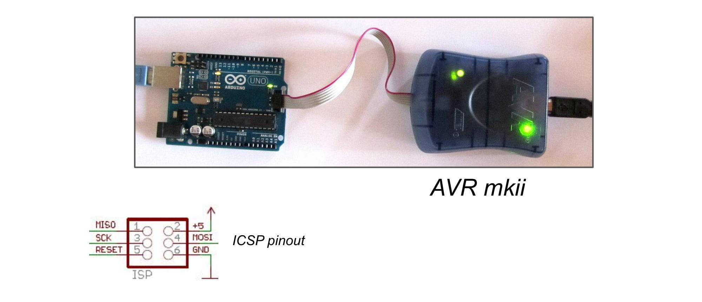To program using the ISP device, connect to the Arduino Uno's ICSP 2x3 headers at the bottom of the board, like in the picture above.
Notice the schematic symbol for the ICSP 2x3 header pins.
The ICSP 2x3 header pins include the SPI pins SCK (pin D13), MISO (pin D12), and MOSI (pin D11), as well as 5V, GND, and RESET pins.
Note: The RESET pin is needed so that the manufacturer's bootload can be started. It will only start running after a reset (or powering on).
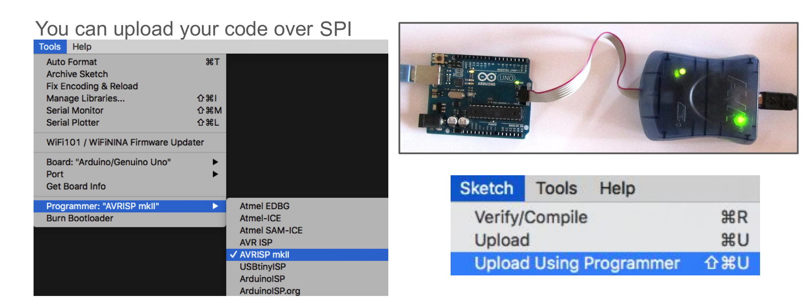In the Arduino IDE, I'm going to tell the software that I am using the mkII by selecting Tools -> Programmer -> AVRISP mkII.
Finally, click Sketch -> Upload Using Programmer to use the ISP device to upload over SPI.
Upload the example Blink sketch, and the onboard LED will start blinking.
However, I see a problem. The blink sketch uses a delay of 1 second. However, my Arduino is blinking with what looks like 2 second delays.
Why is this happening?
The problem is that the chip is using a secret, slower oscillator, thus making delay(1000) slower than expected.
What secret oscillator? The PCB already has a 16MHz oscillator connected to the chip, but there is also one inside the chip itself.
By default, all brand new ATmega328p chips will use an internal (inside the chip) 8MHz oscillator to run the code. My brand new chip is using this default internal clock.
However, the designers of the Arduino Uno put an external (outside the chip) 16MHz oscillator on the PCB. This is because external oscillators tend to be more accurate, and a faster speed is always good.
When the Arduino IDE compiled the code for an "Arduino Uno" board, it assumed the delay(1000) would use a 16MHz clock to count time. But instead, the 8MHz clock is twice as slow, so we are seeing 2 second blinks.
How do we fix this?
The ATmega328p has some special hardware settings, called fuse settings. After a fuse setting is written to the chip, it stays that value after restarting.
One of the ATmega328p fuse settings is the clock speed and source. This is how the chip knows what speed and type of oscillator it should be using.
To change the fuse settings (like clock speed) to their matching Arduino Uno values (external 16MHz clock), the brand new ATmega328p must be given a HEX file with the new settings inside.
But how do we send a HEX file that contains the correct fuse settings?
We do that when "burning" the Arduino bootloader (see next section)...
Note: The "Arduino Uno" board does not have an options to adjust fuse settings within the Arduino IDE. If you want to have more control over the fuse settings on the ATmega328p, then I recommend using this Arduino core.
The fuse settings are written during the "Burn Bootloader" process.
In addition to the manufacturer's bootloader already on the chip, the Arduino IDE can save a custom bootloader written by Arduino.
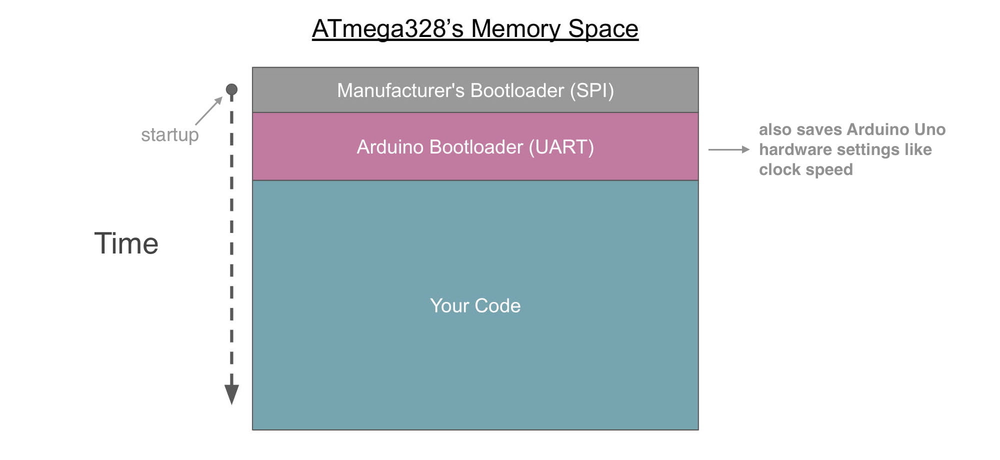If that custom bootloader is saved to memory, and then ran, it will read in code over the UART (Tx/Rx) pins and save it to memory.
That is good for us, because then we can upload code through the Arduino Uno PCB's USB connector (thanks to the USB-to-UART adapter onboard).
So first, the custom bootloader must be uploaded, using the manufacturer's bootloader and the SPI pins.
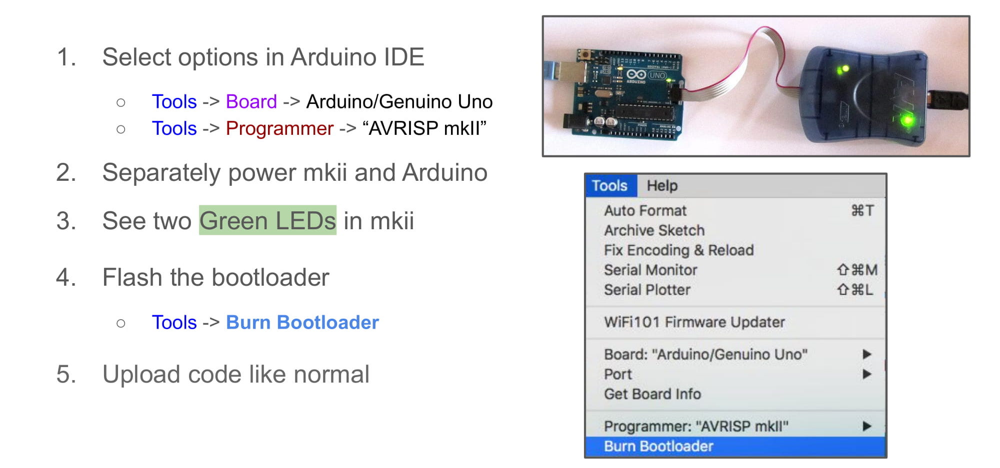With an Arduino Uno powered over USB, the AVR mkII must be connected to the ICSP connector on the Arduno Uno.
Then, follow the steps in the picture above to "Burn" the bootloader for the Arduino Uno.
Once the bootloader is finished being uploaded over SPI, the onboard ATmega328p will now be able to read in new sketches over UART (and therefore the onboard USB connector).
Note: You can also still upload the sketch over the SPI pins like in the previous section if you like. The timing of the delay will be correct now, because burning the bootloader set the fuse settings correctly.
Note: writing a sketch over SPI will erase the custom UART bootloader from memory. This has the advantage of allowing your Arduino sketch to start running sooner after a reset (or powering on), but it also means you can't upload code over UART.
Note: the words "burn", "upload", "write", "save", "flash", these all mean the same thing. They are describing the process of saving firmware to a microcontroller or other such device.
If you read all of that, then you might be thinking, "So do I need to buy one of those SPI programmer mkII things?"
If you have more than one Arduino Uno, then the answer is "No". You can use one Arduino Uno to flash the bootloader onto another Arduino Uno (cool!).
First, you need to connect the two Arduino Unos like the picture below. Notice that we are connecting the SPI pins of each.
Note: the brand new ATmega328p chip must be on the target board. That is what will receive the new bootloader.
Note: the programmer board must already have an ATmega328p that has been bootloaded and can behave like a normal Arduino Uno.
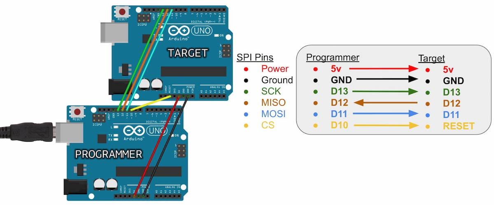In the picture above, one Arduino Uno is labelled "programmer", and the other "target". The programmer is what will replace the mkII I was using before, and the target is the Arduino that will be receiving the bootloader.
Notice that the programmer Arduino has its D10 pin connected to the target's RESET pin. This is so the programmer board can trigger the target board's manufacturer bootloader (SPI) to start running.
And now, burning the bootloader is a second Arduino can be done in 4 steps:
Below are pictures showing some detail for each step.
The first step is to have the programmer Arduino Uno become an in-system programmer (ISP). This is done by simply putting some code on it that behaves like a normal ISP.
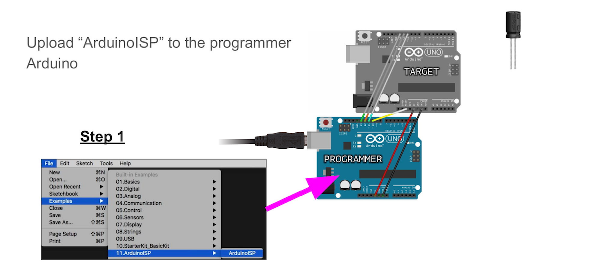Like in the picture above, you'll find the ArduinoISP example sketch hidden in the example folder.
Upload this example sketch to the programmer just like normal, and make sure you have "Arduino Uno" selected as the target
After the ArduinoISP example sketch uploads, now add the 10uF cap between the RESET and GND pins on the programmer.
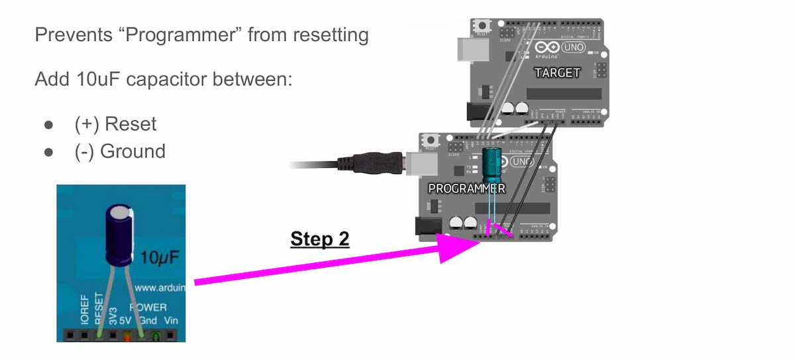This capacitor prevents the programmer from resetting.
Note: If you are using a polarized capacitor (like I am in the picture), make sure the negative side is connected to the GND pin!!!
Note: You may find that you actually don't need this capacitor for it to work. This depends on what IDE version you are using, and what operating system you have installed.
Now, I need to tell the Arduino IDE that the programmer I am using is the "Arduino as ISP" example sketch.
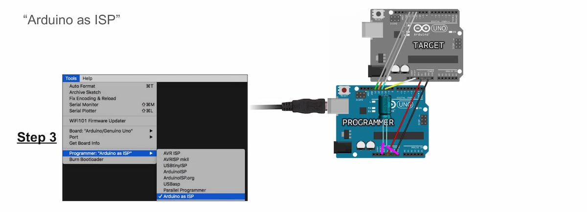There are many programmers (ISPs) you can select from the Tools -> Programmer menu. You'll find Arduino as ISP in there.
Note: Do not confuse it with "ArduinoISP", that is completely different. I know, it's confusing, but you want to select Arduino as ISP.
Finally, I can go to Tools -> Burn Bootloader.
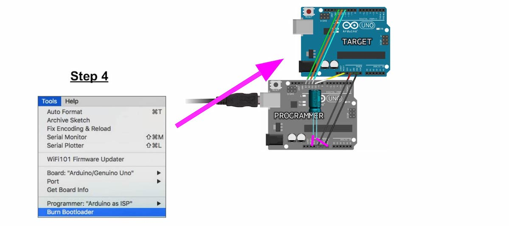Before pressing, I need to make sure I have the correct target board type selected in the "Boards" menu. For me, it is "Arduino Uno", because that is what I am burning the bootloader to.
That's it! Now the target Arduino (with the brand new chip) has the correct bootloader, the correct fuse settings, and can receive code over UART (just like a normal Arduino Uno).
The image below shows a summary of what this guide has covered.
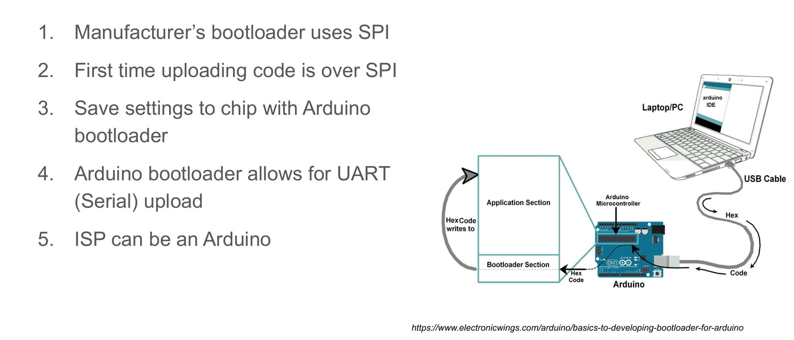What if I want to program the breadboarded ATmega328p from the previous guide?
I can use the "Arduino as ISP" method, just like before. However, the target board will no longer be another Arduino Uno PCB, but will instead by my breadboarded ATmega328p.
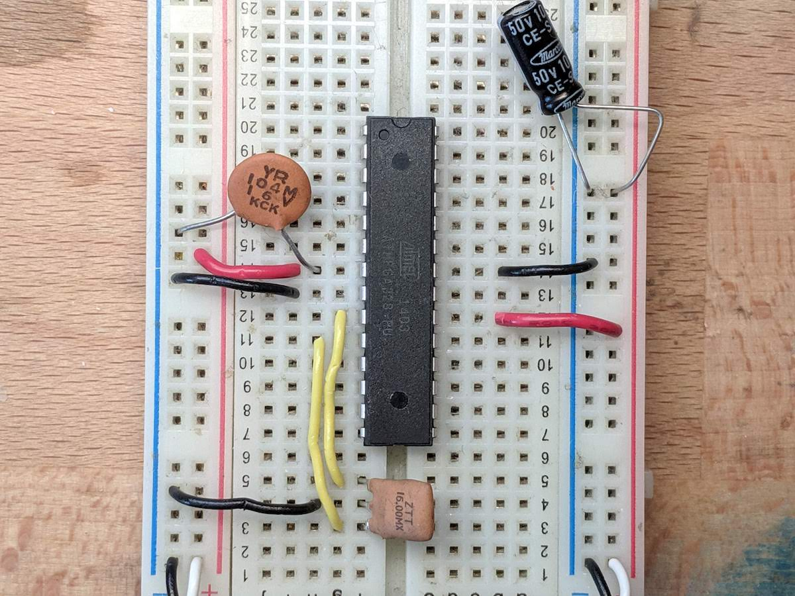We need to connect the SPI pins SCK (pin D13), MISO (pin D12), and MOSI (pin D11), as well as 5V, GND, and RESET pins, just like in the images above.
However, not it is a bit trickier because we are using the raw package.
In order to know which pins are which, use the pinout image of the microcontroller below.
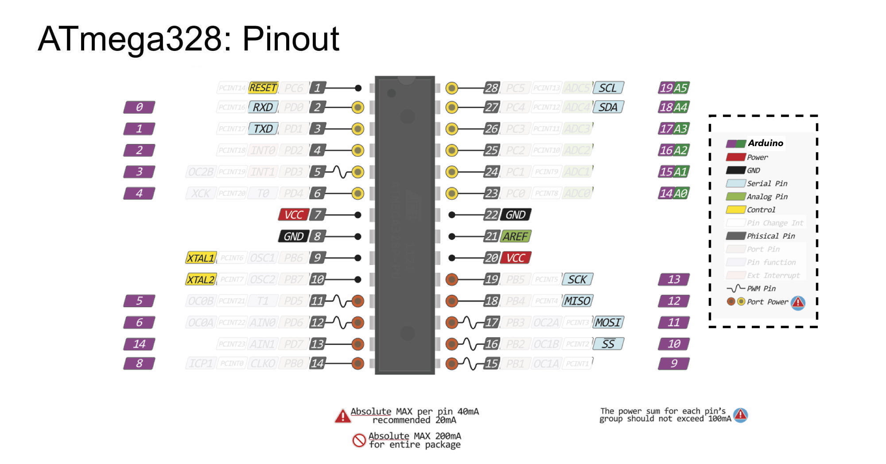The power and ground wires are easy. I can just connect those to the power and ground rails on the breadboard.
The three SPI pins are at the bottom-left corner of the package, at physical pins 19, 18, and 17. I can connect those to my programmer boards pins D13, D12, and D11.
The RESET on the package is at physical pin 1, at the top-left of the package. I can connect this to the programmer board's pin D10.
See the wiring in the picture below.
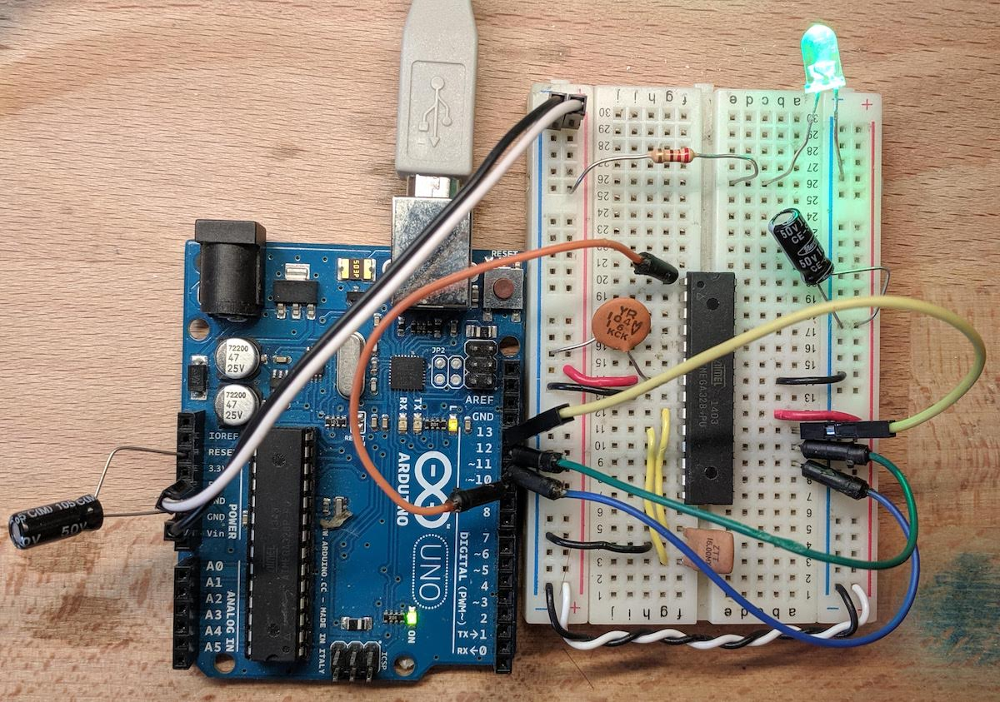With this wiring, I can Burn Bootloader to the target microcontroller on my breadboard (amazing!). This will both set the fuse settings (so it uses the external oscillator), and it will save the UART bootloader to its memory.
Great, my breadboarded microcontroller has been bootloaded!
Now, I have two choices. I can continue to upload my code over SPI, using my programmer board. Or, I can use the Arduino bootloader that is now saved on the chip to upload over UART (using a UART-to-USB adapter of some type).
If I want to upload over UART, then I have some more wiring to do.
First, I'm going to remove all the wires connecting the breadboard to my programmer board.
Next, I need to find the UART pins (Tx/Rx) on the microcontroller's package. Looking at the pinout picture from above, I see they are at physical pins 2 (Rx) and 3 (Tx), just below the RESET pin.
I'm going to plug in two jumper wire there, a green for Rx, and a yellow wire for Tx.
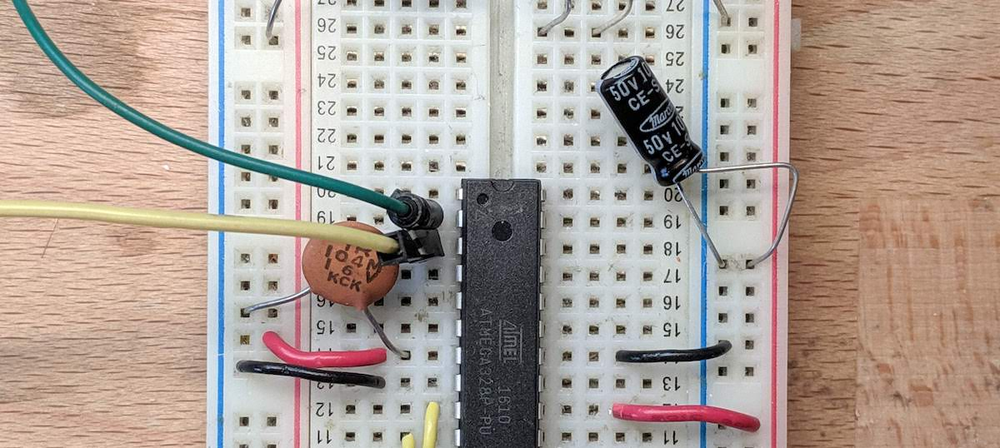These wires are going to need to connect to a UART-to-USB adapter. These come in different shapes and types, but they most commonly come with 6 header pins in a row.
I'll connect my green wire (Rx) to the Tx pin of the adapter, and then connect the yellow wire (Tx) to the Rx pin of the adapter.
Then, I will of course need to connect the GND pin of the adapter to my breadboards ground rail.
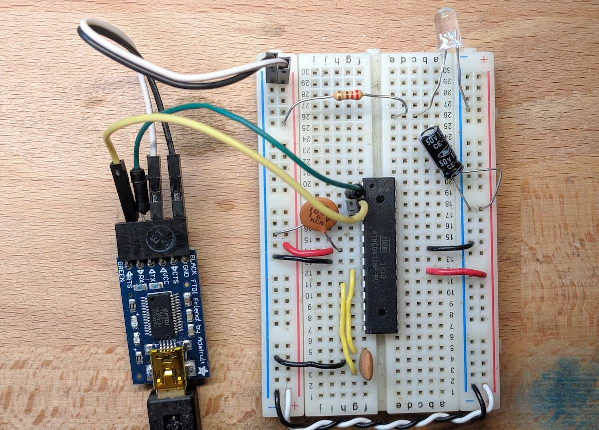Finally, there is one last connection we need to make, and it involves the RESET pin.
Remember, the UART-to-USB adapter must be able to restart the ATmega328p, so that it can trigger the Arduino bootloader to start running. This is similar to pressing the reset button on the microcontroller, and then quickly releasing so it restarts.
These UART-to-USB adapters have a pin on them called RTS that we can use to toggle the reset pin. However, there is a problem.
The RTS pin on the adapter does not "quickly" release the reset pin, but will instead hold the reset pin down for a while. If we connected it directly to the reset pin, the microcontroller would be held in a reset state, and the bootloader would never start.
There is a simple solution to this: add a small capacitor between the RTS on the adapter, and the RESET pin on the breadboarded microcontroller.
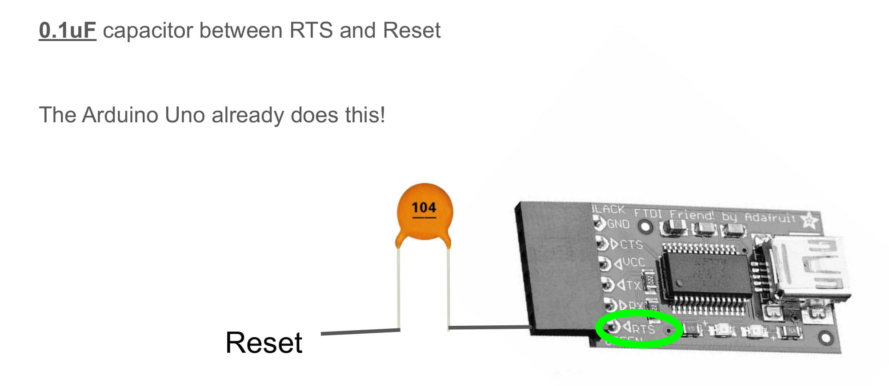Note: it is interesting to know that the Arduino Uno already has this capacitor on the PCB. It is connected between the RTS pin of the ATmega8u2 and the RESET pin of the ATmega328p.
Below is a picture of a capacitor on my breadboard, that sits between the RTS on the adapter, and RESET on the chip.
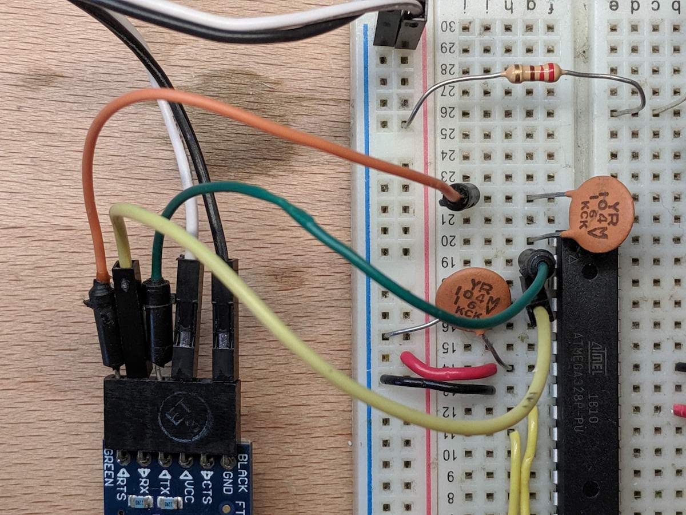Finally, I just need to select the UART-to-USB adapter's port in the Arduino IDE, and now I can upload code the normal way to my breadboard, over a serial port.
Great, now I can upload code to my breadboarded microcontroller the "normal" way (over USB and then UART). Now I can easily use the Upload button in the IDE, and I can easily use the Serial Monitor to debug.